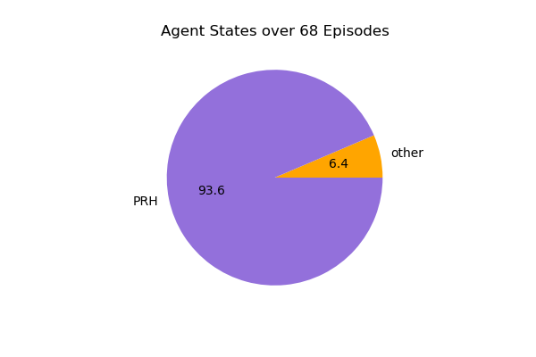
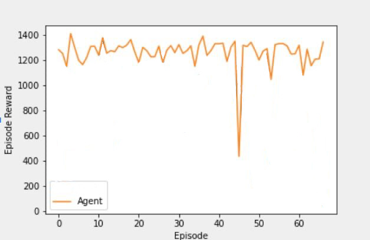
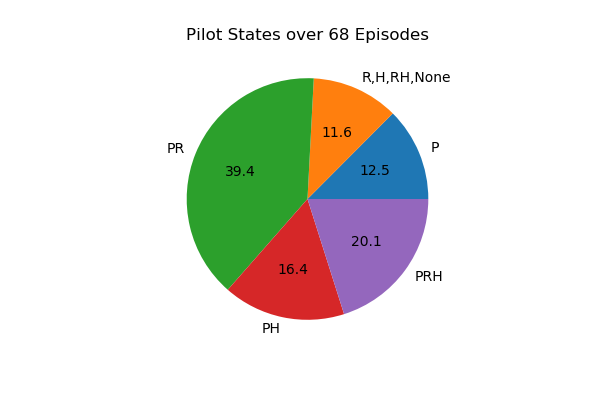

Introduction
The first phase of this project will focus on using ML to identify mistakes or sub-optimal maneuvers of trainee pilots inside a flight simulator (Xplane),to reduce human trainer supervision while improving student learning outcomes. To learn how to fly, trainees at DTC are currently guided through exercises in a flight simulator by a human flying instructor. We posit that training a predictive/RL-enabled system to take on some tasks is a viable approach to reduce the workload of an instructor and allow them to interact with more students simultaneously. In the first step, an RL agent is trained with SAC (Soft Actor-Critic) algorithm to perform the most important task in flying an airplane, flying straight and level. Pitch, yaw, and roll of the airplane are used to measure the success of the agent in performing this task. These variables are shown in the below figure.

| Yaw_reward | if 'Y' | 1 - (yaw_error)0.4 |
| Pitch_reward | if 'YP' | 1 - (pitch_error)0.4 |
| Roll_reward | if 'YPR' | 1 - (roll_error)0.4 |
Agent
Since we had the recorded data from a flight performed by a pilot for 68 episodes, we looked into 68 episodes of a
trained agent. The figure on the left shows the distibution of the agent's states over these 68 episodes. The right figure, shows the agent's episodic reward based on the reward function mentione in the
Introduction section.


Below is a recorded video from the trained agent performing the straight and level task. The reward for each timestep is shown on the video in time. This reward is based on the same reward function used for training the agent and is calculated by reading the pitch, roll and heading of the airplane using OCR.
Pilot
A pilot was asked to perform fly straight and level for 68 episodes. The figure on the left shows the distibution of the airplane's states over these 68 episodes. The right figure, shows the pilot's episodic reward based on the reward function mentioned in the
Introduction section.


Below is a recorded video from the pilot performing the straight and level task.
Compare


Since the agent is specifically trained based on the reward function while the pilot might include several other parameters in his/her dicision makings, the agent reaches a
higher reward based on our reward function. This alone however cannot be an indication for better performance of the agent compared to pilot. Additionally,
we were not aiming to perform better than the pilot, if possible. Our goal was to train an agent that takes similar decisions to the pilot in the same situtions. Therefore, the below
figure can better show that our agent can guides students during training similar to a pilot. It shows that over the training time, the difference
between the actions that the agent and pilot take in similar states decreases.